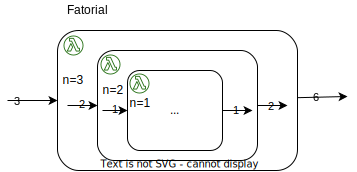

Recursividade
Uma função é dita recursiva quando ela é definida em termos de si mesma.
Estas funções são muito importantes tanto na matemática, onde são também conhecidas como recorrências. Por exemplo, vejamos como é definido um exemplo recorrentes de função na computação (pun intended) de forma recursiva, o cálculo do fatorial de um número. Considere a seguinte definição.
Por esta definição, podemos calcular o fatorial de 4, por exemplo, assim.
Na computação, as funções recursivas são importantes por serem uma estratégia de resolução de problemas, pois possibilitam resolver problemas pouco a pouco, e especialmente importantes na programação funcional, onde servem de alternativa às instruções de iteração como for(;;) e while(), comuns nas linguagens imperativas.
Em Haskell
Não há nada de especial em termos de sintaxe na declaração de funções recursivas. O cálculo do fatorial pode ser traduzido quase que diretamente para Haskell usando guardas.
fatorialGuardas n
| n == 0 = 1
| otherwise = n * fatorialGuardas (n-1)
Observe que a definição é iniciada tratando o caso em que 0 é passado como parâmetro; este é o que chamamos de caso base, que serve para limitar a recursão e impedir que execute para sempre.
Já o que torna a função recursiva acontece na última linha: a invocação da própria função.
Como esta invocação será feita para o valor passado como parâmetro menos 1, temos a garantia de que, para qualquer número positivo passado como parâmetro, em algum momento haverá uma invocação da função com o parâmetro igual a 0, que será respondida pelo caso base.
É importante ficar claro que para cada invocação da função, \(n\) assume um valor diferente, o que pode fazer parecer que o valor de \(n\) está mudando, mas isso não poderia estar mais longe da verdade! Cada \(n\) só existe no escopo de uma invocação da função. Pictograficamente, \(n\) só é visível dentro da "caixinha" onde foi associada a um valor.

Outra forma absolutamente equivalente de definir a função é usando casamento de padrões, como a seguir.
fatorialPM 0 = 1
fatorialPM n = n * fatorialPM (n-1)
Considerando as duas definições da função, considere o que acontece se as mesmas forem invocadas com um número negativo como parâmetro. O que acontece? A recursão simplesmente "nunca" termina, continuando com \(n\) indo para o - infinito. Acontece que não é definido o fatorial de números negativos e, por isso, precisamos que um erro seja lançado quando uma tentativa de invocação deste tipo ocorrer. Há diferentes formas de se lançar um erro, sendo a primeira simplesmente limitar os valores válidos para os parâmetros.
fatorialGuardas n
| n == 0 = 1
| n > 0 = n * fatorialGuardas (n-1)
A outra alternativa é explicitamente causar um erro.
fatorialGuardas' n
| n == 0 = 1
| n > 0 = n * fatorialGuardas' (n-1)
| otherwise = error "Não se pode calcular o fatorial de números negativos"
fatorialGuardas'' n
| n == 0 = 1
| otherwise = if n > 0 then n * fatorialGuardas'' (n-1)
else error "Não se pode calcular o fatorial de números negativos"
Funções Recursivas
- Caso base - Limita recursão.
- Caso geral - Faz chamada recursiva para problema "menor"
Note que em ambas as formas, temos algumas definições simples, os casos base, que não fazem recursão, e os casos recursivos, envolvem recursão. Este padrão se repetirá praticamente sempre nas definições recursivas, o que não quer dizer que a definição será óbvia.
Máximo Divisor Comum
O máximo divisor comum de dois números é, bem, o maior dentre os divisores comuns. Por exemplo, considere os números 18 e 12: já que o 18 tem como divisores {18, 9, 6, 3, 2, 1} e o 12 tem {12, 6, 4, 3, 2, 1}, o maior dentre os divisores comuns é 6, isto é, o mdc(18,12) = 6.
Logo, se quisermos implementar uma função que calcule o mdc, podemos começar por encontrar o conjunto de divisores, usando uma recursão, e então iterar pelos conjuntos para identificar o maior comum, com outra recursão. Enquanto esta abordagem é um bom exercício de manipulação de listas, se o objetivo é calcular o mdc de forma recursiva, há uma abordagem melhor, conhecida como o algoritmo de Euclides. De forma direta, este algoritmo pode ser expresso como a seguinte função recursiva, onde \(a >= b\)
Em Haskell, a definição fica assim.
mdc :: Integer -> Integer -> Integer
mdc a b
| b == 0 = a
| otherwise = mdc b (a `mod` b)
Fibonacci
Considere a função que retorna um termo da sequência de Fibonacci, em que os dois primeiros termos são 1 e todos os outros termos são iguais à soma dos dois termos anteriores.
A mesma tradução direta da definição matemática para Haskell também pode ser feita aqui, sendo a única diferença o fato de que duas invocações recursivas são feitas a cada passo. Há, contudo, diversas possibilidades de tradução.
fibIf n = if n == 1 then 1
else if n == 2 then 1
else fibIf (n - 1) + fibIf (n - 2)
fibGuard n
| n == 1 = 1
| n == 2 = 1
| otherwise = fibGuard (n - 1) + fibGuard (n - 2)
fibPattern 1 = 1
fibPattern 2 = 1
fibPattern n = fibPattern (n - 1) + fibPattern (n - 2)
fibCase x = case x of 1 -> 0
2 -> 1
n -> fibCase (n - 1) + fibCase (n - 2)
Conjectura de Collatz
Considere a seguinte função para construir uma sequência de números usando \(n\) como base.
Exercício
Defina a função acima em Haskell.
Segundo a conjectura de Collatz, para qualquer valor de \(n\), em algum momento a sequência converge para o valor 1 e a partir daí repete infinitamente os termos 4, 2, 1. Por exemplo,
- para \(n=7\), a sequência é 7, 22, 11, 34, 17, 52, 26, 13, 40, 20, 10, 5, 16, 8, 4, 2, 1;
- para \(n=12\), 12, 6, 3, 10, 5, 16, 8, 4, 2, 1;
- para \(n=19\), 19, 58, 29, 88, 44, 22, 11, 34, 17, 52, 26, 13, 40, 20, 10, 5, 16, 8, 4, 2, 1; e,
- para \(n=27\), 27, 82, 41, 124, 62, 31, 94, 47, 142, 71, 214, 107, 322, 161, 484, 242, 121, 364, 182, 91, 274, 137, 412, 206, 103, 310, 155, 466, 233, 700, 350, 175, 526, 263, 790, 395, 1186, 593, 1780, 890, 445, 1336, 668, 334, 167, 502, 251, 754, 377, 1132, 566, 283, 850, 425, 1276, 638, 319, 958, 479, 1438, 719, 2158, 1079, 3238, 1619, 4858, 2429, 7288, 3644, 1822, 911, 2734, 1367, 4102, 2051, 6154, 3077, 9232, 4616, 2308, 1154, 577, 1732, 866, 433, 1300, 650, 325, 976, 488, 244, 122, 61, 184, 92, 46, 23, 70, 35, 106, 53, 160, 80, 40, 20, 10, 5, 16, 8, 4, 2, 1
Esta é uma conjectura pois não se sabe se a sequência realmente converge para 1 dado qualquer \(n\). O que você acha de testar alguns valores para tentar identificar há ou não uma convergência? Em C, poderíamos fazer o seguinte:
int collatz(int n, int i){
if (i == 1)
return n;
else {
int f_n_i_menos_1 = collatz(n, i-1);
if (f_n_i_menos_1 % 2 == 0)
return f_n_i_menos_1 /2;
else
f_n_i_menos_1 * 3 + 1;
}
bool converge(int n) {
bool convergiu = false;
for (int i = 0; !convergiu; i++)
convergiu = collatz(n,i) == 1;
return convergiu;
}
Por mais ineficiente que seja, este código em C funciona e pode servir de base para uma versão em Haskell, mas como escrever a iteração? Como dito anteriormente, a iteração pode ser feita por meio de outra recursão!
collatz :: Int -> Int -> Int
collatz n i
| i == 1 = n
| even (collatz n (i-1)) = collatz n (i-1) `div` 2
| otherwise = collatz n (i-1) * 3 + 1
converge :: Int -> Bool
converge n = convergeInterna n 1
convergeInterna :: Int -> Int -> Bool
convergeInterna n passo
| collatz n passo == 1 = True
| otherwise = convergeInterna n (passo + 1)
Vejamos alguns exemplos.
*Main> collatz 7 13
16
*Main> collatz 7 17
1
*Main> converge 7
True
*Main> converge 12
True
*Main> convergeInterna 7 15
True
*Main> convergeInterna 7 1
True
Tente executar a função para o número 27, cuja sequência calculada acima tem 111 passos. Quando seu computador começar a se desesperar ou você cansar de esperar, aperte Ctrl + C. Mas por quê esta função tão simples ficou tão pesada? Por quê para calcular se a sequência converge, primeiro a função testou o primeiro termo, 27, e viu que não era igual 1; calculou então o segundo termo, para isto calculando o primeiro termo novamente, e testando se igual a 1; calculou então o terceiro termo, para isso calculando o segundo termo, para isso calculando o primeiro, e assim por diante. Além disso, no cálculo de cada termo, há um teste para ver se o termo anterior é ímpar ou par, o que por si só calcula o termo anterior.
Mais tarde veremos como tornar esta função muito mais eficiente, como na versão em C, em que o termo anterior só é calculado uma vez, mas por enquanto pensemos em como podemos limitar o número de passos nesta iteração.
Exercício
- Modifique a definição da função converge para impedir que execute ad eternum.
Dica
- Use um contador para limitar o número de recursões e, no caso do limite ser alcançado, emita um erro.
Resolução
- Use um contador para limitar o número de recursões e, no caso do limite ser alcançado, emita um erro.
collatz :: Int -> Int -> Int
collatz n i
| i == 1 = n
| even (collatz n (i-1)) = collatz n (i-1) `div` 2
| otherwise = collatz n (i-1) * 3 + 1
converge :: Int -> Int -> Int -> Bool
converge n passo limite
| limite == 0 = error "Não alcançou uma resposta"
| collatz n passo == 1 = True
| otherwise = converge n (passo + 1) (limite - 1)
Binomial
Há várias maneiras de se calcular o número de combinações que se pode obter com \(k\) elementos de um conjunto de \(n\) elementos. Uma destas formas é via a seguinte recorrência.
Binomial
Implemente uma função recursiva que calcule \(\binom{n}{k}\)
Resolução
A ser implementado
Recursão e Listas
A recursão é essencial no processamento de listas e, de fato, muitas das funções listadas na seção sobre listas podem e são definidas recursivamente, como a função maximum:
\(maximum~[1,2,3] = max~1 \left( maximum~[2,3] = max~2 \left( maximum~[3] = 3 \right) \right)\)
Vejamos algumas definições.1
maximum
maximum' :: Ord a => [a] -> a
maximum' [] = error "lista vazia"
maximum' [h] = h
maximum' (h:t) = max h (maximum' t)
length
length' :: [a] -> Int
length' [] = 0
length' (x:xs) = 1 + length' xs
last
last' :: [a] -> a
last' [] = error "List is empty"
last' [x] = x
last' (_:xs) = last' xs
reverse
reverse' :: [a] -> [a]
reverse' [] = []
reverse' (x:xs) = reverse' xs ++ [x]
replicate
replicate' 0 e = []
replicate' x e = e:replicate' (x-1) e
zip
zip' [] _ = []
zip' _ [] = []
zip' (x:xs) (y:ys) = (x,y) : zip' xs ys
elem
elem' _ [] = False
elem' e (x:xs) = e == x || elem' e xs
++
maisMais :: [a] -> [a] -> [a]
maisMais [] [] = []
maisMais [] y = y
maisMais (x:xs) y = x : maisMais xs y
Exercício
- Defina a função
take - Defina a função
drop - Defina a função
uniãoque recebe duas listas sem repetições retorna a concatenação das listas, sem repetições, usando recursividade. - Defina a função
uniãoque recebe duas listas sem repetições retorna a concatenação das listas, sem repetições, usando compreensão de listas.
Ordenação
-
Selection-sort (https://www.youtube.com/embed/Ns4TPTC8whw)
- Defina uma função
frque receba um inteiroie uma lista de inteirosle retorne a listalsem a primeira ocorrência deieml. - Defina uma função
fmque receba uma lista de inteirosle retorne o menor inteiro da lista. - Defina uma função
fsque receba uma lista de inteirosl, escolha o menor inteiromdele retornemconcatenado a cabeça da lista gerada porfs (fr m l)
- Defina uma função
-
Merge-Sort (https://www.youtube.com/embed/XaqR3G_NVoo)
- Defina uma função
fdque receba uma lista e retorne suas duas metades em uma dupla:metade [1..11] = ([1,2,3,4,5],[6,7,8,9,10,11]) - Defina uma função
fuque receba duas listas ordenadas e retorne uma lista ordenada com a união das listasunião [1,3,5,7] [2,4,6,7] = [1,2,3,5,6,7,7] - Defina uma função
fmque receba uma lista, divida-a na metade usandofd, apliquefmrecursivamente em cada metade, e calcule a união das listas resultantes usandofu.
- Defina uma função
-
Quick-sort
- Defina uma função
fpque receba uma listalde inteiros e retorne retorne uma tripla(p,m1,m2)em quepé o primeiro elemento da listalm1é a lista dos elementos emlmenores ou iguais ap, exclusivem2é a lista dos elementos emlmaiores quep
- Defina uma função
fqque recebe uma listal, calcule(p,m1,m2) = fp le retornefq m1concatenado apconcatenado afq m2.
- Defina uma função
Recursão de Cauda
A recursão de cauda é uma técnica importantíssima para melhorar o desempenho de funções recursivas ao economizar os recursos do sistema e permitir que recursões possam ser até "infinitas", como em laços infinitos usados em jogos, por exemplo. Esta técnica será explorada no futuro, uma vez que já estejam confortáveis com recursões não otimizadas.
-
Todas as funções definidas a seguir tem nome terminado em ``` para evitar colisão com as funções padrão. ↩